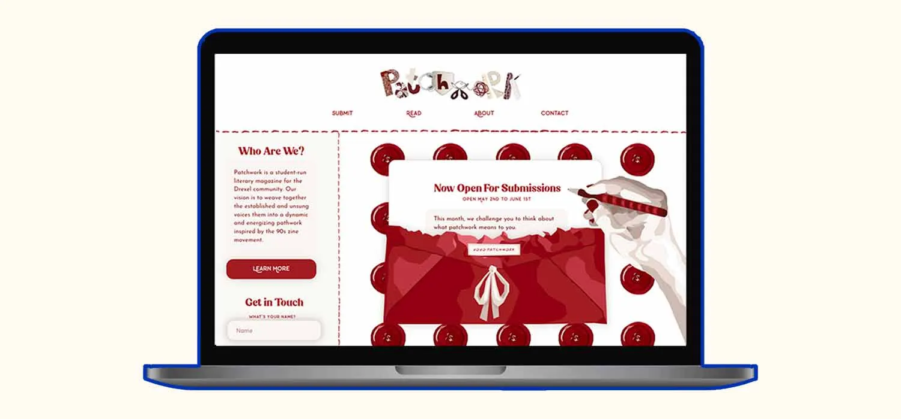

Case Study #2:
Patchwork
Introduction
As lead designer and co-founder of Patchwork, a new literary magazine at Drexel University, I developed a platform that gives our magazine a digital space. Working alongside co-founder Lola Hart, we created a space where student writers and artists can showcase their work within a crafty, vintage-inspired aesthetic. The project required building a brand identity and user experience from the ground up, incorporating warm reds and cream tones, custom illustrations, and thoughtful interactive elements. Through design choices, Patchwork's digital home reflects its mission: weaving together diverse creative voices from across the Drexel community.
Starting the Magazine
The concept for Patchwork emerged from a shared desire to celebrate the literary talents and artistic expressions of the Drexel community. We recognized a need for a medium that could unify and amplify both the unsung voices as well as the established writers and artists within our campus. We carefully considered how we could do this, and landed on a digital magazine. Along with being a co-founder, I have taken on a role on the team to develop the graphic design and digital interfaces necessary to make our vision a reality.
Each issue of Patchwork is centered around a unifying theme, chosen to spark creativity and guide submissions. This thematic approach allows for a diverse range of perspectives and interpretations, resulting in a patchwork tapestry of ideas and narratives. We do not have many restrictions around what one may submit, the only rules being that written pieces must be under 2000 words and visual submissions (if time based) must be under 3 minutes. We hope for people to find a creative outlet in our magazine, from poetry to painting. For our first month's submissions, we decided to implement the theme of "patchwork" in honor of it being Patchwork's first edition.
Our first edition is still in the works, but will be opening for submissions on December 1st and officially launching in early January. We are excited to see where this project goes and to hear and see our community's explorations and expressions.
Goals
The primary goal for the Patchwork website was to create a digital space that embodied the magazine's key characteristics: inclusivity, creativity, and community engagement.
To provide a clear outline, the website's three main goals are as follows:
- Provide a user-friendly platform for all functions of our magazine.
- Capture the fun spirit of Patchwork through dynamic design and interactivity.
- Spark conversation and allow readers to connect with team members.
Design Choices
Color Scheme: The color scheme was comprised of shades of red accented by varied off-white tones. This combination of natural cream tones and bold reds created a striking visual identity with a sense of energy and vibrancy.
Graphics:All graphics featured on the website were custom-made by me using Adobe Illustrator. By creating my own graphics, I was able to achieve a unified aesthetic across pages, with each visual element seamlessly blending together in style and color. The graphics were designed to capture the handcrafted, collage-like spirit of zines while still maintaining a modern, polished look.
Font Choices:
HeadersTreova, a fun and bold serif font, was used for all main headings. Its playful yet impactful style immediately grabbed attention and set the tone for the magazine's energetic nature.
SubheadersMinimalusta, a quirky sans-serif font, complemented the headers with its unique personality, adding more visual interest.
Paragraphs:Josefin Sans, a clean and legible sans-serif, was chosen for the body text, ensuring optimal readability while maintaining a cohesive typographic aesthetic.
Animations:I incorporated animations throughout various aspects the design. The custom graphics I created featured thoughtfully choreographed movements, breathing life into the visuals. Additionally, strategic use of animations on other elements, such as hover effects and scroll-triggered transitions, enhanced the overall user experience and fostered a greater sense of interactivity.
Through carefully curated design choices, the Patchwork website strikes a balance between the handcrafted essence of zines and a polished, professional aesthetic. The combination of a bold color palette, custom graphics, playful typography, and thoughtful animations resulted offer an immersive digital space that embodies what our magazine is about.
Final Design
The final design of Patchwork successfully accomplished what it was set out to. Take a look through the website below: